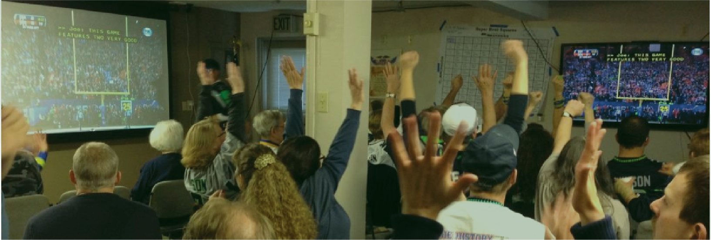

Next general meeting
Date to be announced
General meetings are hybrid: come in person or join on Zoom. Members get the date and Zoom details by email first.
The Puget Sound Association of the Deaf is one of the oldest Deaf clubs in the world. We gather, organize, and celebrate in ASL, at our hall in Ballard and all around the Salish Sea.

Game day at PSAD Hall. In ASL, applause is hands in the air.
Pick the one you came for.
Date to be announced
General meetings are hybrid: come in person or join on Zoom. Members get the date and Zoom details by email first.
September 27, 2026
PSAD marked its 125th anniversary at the Mercer Island Community & Event Center, on the island where the first picnic was held. The celebration sold out.

Birthdays, workshops, game nights, club meetings. The hall comes ready to use.
One newsletter for PSAD and the wider Pacific Northwest Deaf community.